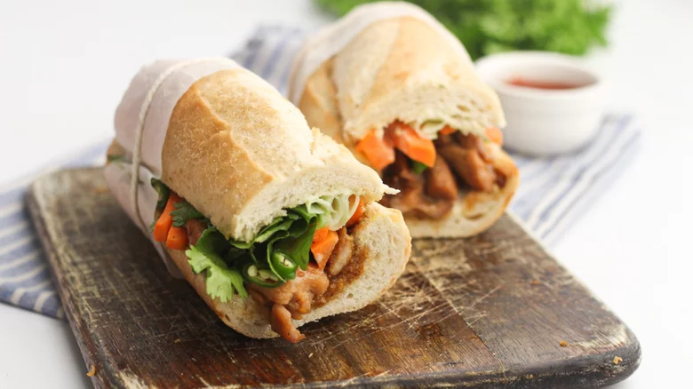

Banh Mi

All You Need is Banh Mi
Banh mi sandwiches are a Vietnamese street food that originated in Saigon. Served on soft
French baguettes, they’re a delicious hybrid of French and Vietnamese cuisine. Typically, they
contain pickled carrots, daikon, chiles, cucumber slices, cilantro, mayo, and a protein.
Popular proteins include marinated pork, chicken, and paté.
Ingredients
- 2 cloves garlic
- 1 carrot
- 1 small cucumber
- 1/2 cup of cilantro
- 2 green chili peppers
- 1/4 cup sugar
- 1/8 cup rice wine vinegar
- 1 tbsp salt
- 12 oz boneless, skinless chicken thighs
- 1 1/2 tbsp sesame oil
- 1 tbsp honey
- 1 tbsp soy sauce
- 1 baguette
- 3 tbsp mayonnaise
- 1 tsp Maggi seasoning
Steps
- Mince the garlic.
- Peel the carrot and chop it into matchstick pieces.
- Peel and slice the cucumber into ribbons.
- Pick the cilantro leaves off the stems.
- Slice the green chilies.
-
Mix the sugar, rice wine vinegar, and salt with the hot water until the sugar and salt have
dissolved.
- Pour the mixture over the carrots and let sit to pickle for 1 hour.
- Chop the chicken thigh meat into bite-sized pieces and place them in a large bowl.
-
Mix the minced garlic, sesame oil, honey, hoisin sauce, and soy sauce, and pour it over the
chicken.
- Refriferate the chicken for 15 minutes.
-
Heat a frying pan over medium-high and sute the marinated chicken until cooked through,
about 10 minutes.
- Drain the pickled carrots.
-
Slice open the baquette and scoop out some of the soft bread inside to create more room for
the sandwich fillings.
-
Spead mayonnaise onto both sides of the banguette, then sprinkle it with Maggi Seasoning.
-
Place the cooked chicken inside the bread followed by carrots, cucumber,cilantro, and chili
peppers.
- Slice the banh mi in half to make two servings and enjoy!